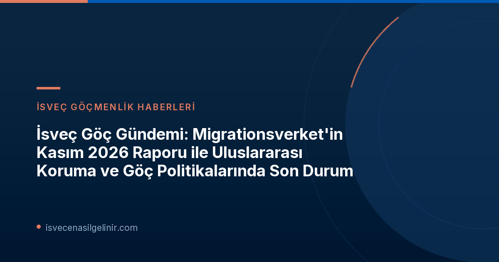

Uluslararası Koruma Başvurularında Düşüş Devam Ediyor
Migrationsverket'in yeni prognosuna göre, İsveç'e uluslararası koruma (önceden "sığınma" olarak adlandırılıyordu) talebinde bulunan kişi sayısında beklenen düşüş sürüyor. Bu durumun başlıca nedenleri arasında geçiş bütçesi kapsamında ayrılan daha düşük ödenekler ve AB Göç ve İltica Paktı'ndan kaynaklanan yeni düzenlemeler yer alıyor. Planlama Direktörü Eric Ramstedt, bütçe kısıtlamalarının kurumun faaliyetleri ve sonuçları üzerindeki potansiyel etkilerini hükümete sundukları prognosta detaylandırdıklarını belirtiyor.Önemli Değişiklik: "Uluslararası Koruma" Kavramı
11 Haziran 2026 tarihinden itibaren AB Göç ve İltica Paktı'nın yürürlüğe girmesiyle birlikte, "sığınma" kavramı yerine "uluslararası koruma" terimi kullanılmaya başlanmıştır. Bu değişiklik, başvuru kategorilerini ve değerlendirme süreçlerini de etkilemektedir. Ayrıca, "sonraki başvuru" adında yeni bir kategori de tanımlanmıştır.AB Göç ve İltica Paktı'nın Etkileri
Geçtiğimiz yaz yürürlüğe giren AB Göç ve İltica Paktı, İsveç'in uluslararası koruma sisteminde önemli değişikliklere yol açtı. Bu pakt, başvuru süreçlerini, kavramları ve kategorizasyonları yeniden şekillendiriyor. Eric Ramstedt, paktın yürürlüğe girmesinden önceki ve sonraki rakamların tam olarak karşılaştırılabilir olmasa da, İsveç'e koruma arayanların sayısının düşmeye devam edeceği analizinin sürdüğünü ifade etti.Ukraynalılardan Gelen Geçici Koruma Başvurularında Azalma
Massflyktsdirektivet (Kitlesel Göç Yönergesi) kapsamında Ukrayna'dan geçici koruma arayanların sayısında da bir düşüş bekleniyor. Önceki prognostaki tahmine kıyasla yaklaşık 500 azalma ile 9.500 başvuru öngörülüyor. Bu düşüş, massflyktsdirektivinin uzatılmasıyla eş zamanlı olarak yaz aylarında geçici koruma kurallarında yapılan değişikliklerden kaynaklanıyor. Değişiklikler uyarınca, savaşma yaşındaki Ukraynalı erkekler kural olarak artık yönerge kapsamında koruma alamayacaklar. Ancak, bu değişiklikten önce geçici koruma almış kişiler için bu durum geçerli değildir.Yeni Kabul Yasası: 1 Ekim 2026
1 Ekim 2026 tarihinde yürürlüğe giren yeni mottagandelag (kabul yasası), koruma arayanların Migrationsverket'in kendi kabul ve geri dönüş merkezlerinde kalmasını zorunlu kılıyor. Eric Ramstedt, bu yasa ile tesislerde konaklayanların oranının artacağını, ancak bunun hızı ve kapsamı konusunda belirsizlikler olduğunu belirtti.Geri Dönüş Sayılarında Düşüş
Ülkeyi terk etme kararı kesinleşen kişilerin geri dönüş prognosunda da düşüşler yaşanıyor. 2026 için 800, 2027 için ise 400 daha az geri dönüş bekleniyor. Bu düşüşün ana nedenleri arasında daha az koruma başvurusu gelmesi ve bu yıl aile birleşimi kapsamındaki uzatma başvurularının planlanandan daha az sonuçlandırılması gösteriliyor.Faydalı Bilgi: Sonraki Başvuru (Efterföljande ansökan) Nedir?
Eğer bir kişi, herhangi bir AB ülkesinde uluslararası koruma başvurusunda bulunmuş ve hakkında kesin bir karar verilmişse, İsveç'e yapacağı yeni başvuru "sonraki başvuru" olarak kabul edilir ve özel kurallara tabi olur. Migrationsverket, böyle bir durumda başvurunun esasen incelenip incelenmeyeceğine karar verir. Bunun için aşağıdaki üç koşulun da sağlanması gerekmektedir:- Dosyada yeni faktörler ortaya çıkmış olmalı.
- Bu faktörler daha önce sunulamamış olmalı.
- Bu faktörler, başvuranın koruma alma şansını açıkça iyileştirmeli.
2026 Yılı İçin Migrationsverket Prognosu: Detaylı Rakamlar
Aşağıdaki tablo, Migrationsverket'in Kasım 2026 prognosundaki ana senaryo rakamlarını ve Temmuz 2026 prognosuyla karşılaştırmasını sunmaktadır.| Kategori | 2026 Prognosu (Kasım) | Önceki Prognos (Temmuz 2026) | Değişim |
|---|---|---|---|
| Ukrayna'dan Geçici Koruma (Massflyktsdirektivet) | 9.500 | 10.000 | -500 |
| Uluslararası Koruma (İlk Başvuru) - 11 Haziran öncesi (sığınma) | ~2.000 | - | - |
| Uluslararası Koruma (İlk Başvuru) - 12 Haziran sonrası | ~1.700 | - | - |
| Sonraki Başvurular (12 Haziran sonrası) | 1.500 | - | - |
| Uluslararası Koruma Uzatma Başvuruları (Asyl) | 18.000 | 17.000 | +1.000 |
| Öğrenci Başvuruları (İlk ve Uzatma) | 31.000 | 31.000 | 0 |
| Aile Birleşimi Başvuruları (İlk ve Uzatma) | 56.000 | 59.000 | -3.000 |
| Çalışma İzni Başvuruları (İlk ve Uzatma) | 70.000 | 70.000 | 0 |
| Vatandaşlık Başvuruları | 48.000 | 48.000 | 0 |
İsveç Vatandaşlık Testi Hakkında
İsveç'te ikamet eden ve vatandaşlık başvurusu yapmayı düşünen bireyler için sverigemedborgarskapsprov.com adresi, vatandaşlık sınavı hazırlık süreçleri ve güncel bilgiler açısından önemli bir kaynaktır. Sınav yapısı, içerik ve hazırlık materyalleri hakkında detaylı bilgilere bu platform üzerinden ulaşabilirsiniz.Sonuç ve Değerlendirme
Migrationsverket'in Kasım 2026 prognosu, İsveç'in göç ve entegrasyon politikalarında devam eden adaptasyonu gözler önüne seriyor. Özellikle AB Göç ve İltica Paktı'nın ve yeni yasal düzenlemelerin etkileri, gelecekteki göçmenlik süreçleri için önemli bir yol haritası çiziyor. Başvuru sahipleri ve İsveç'teki göçmenlik gündemini takip edenler için bu güncellemeler, planlamalarını yaparken dikkate almaları gereken kritik bilgiler sunmaktadır.Referanslar:
- Migrationsverket Haber Arşivi - Antalet skyddssökande till Sverige fortsätter att sjunka
- sverigemedborgarskapsprov.com
İsveç'te Yaşam ve Göçmenlik Hakkında Daha Fazla Bilgi Edinin
İsveç'teki güncel göçmenlik haberlerini, yasal düzenlemeleri ve vatandaşlık süreçleriyle ilgili merak ettiklerinizi öğrenmek için blogumuzu takip edin.